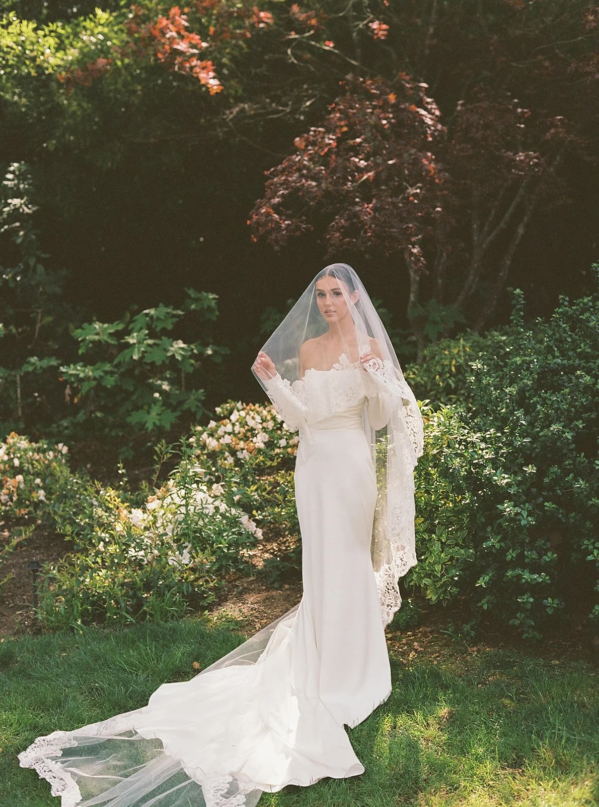
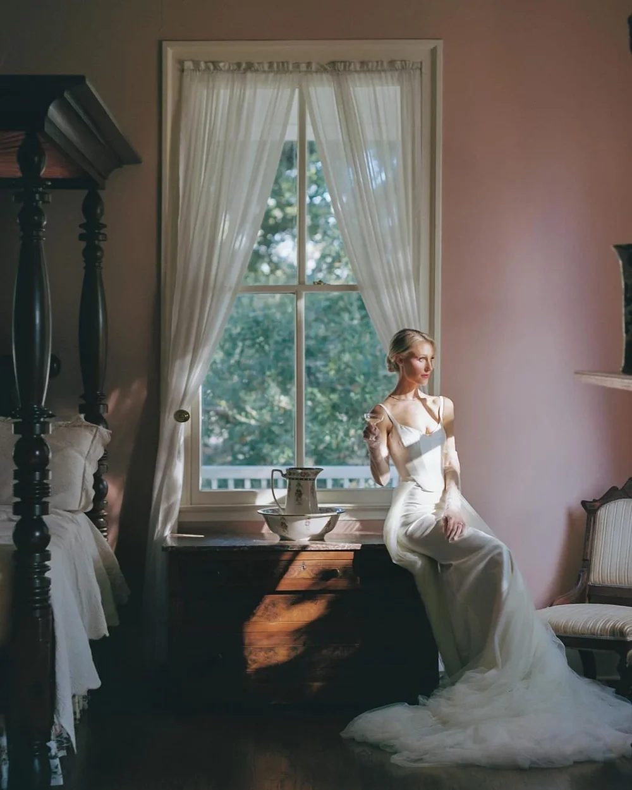

Son Bunyola, Mallorca
Editorial · Mallorca, Spain
Stylist: Sam Ruiz, It's Giving Bridal · Photography: Lynn Shapiro · Bridal: Cortana, Vivienne Westwood, Lihi Hod · Accessories: Hermès, Chanel, Céline · Planner: Jesse Tombs & Alice Medland · Venue: Son Bunyola Hotel & Villas

San Ysidro Ranch
Wedding · Santa Barbara, California
Fashion Styling — Accessories, Second Look, Welcome Party & Groom: Sam Ruiz · Photography: KT Merry · Videography: Ashley and Jay Films · Planner: Tyler Speier · Venue: San Ysidro Ranch

Bride Merch at LOHO Bride
Editorial · Alex Mari
Stylist: Sam Ruiz, It's Giving Bridal · Photography & Art Direction: Alex Mari · Wardrobe: LOHO Bride · Accessories: Bride Merch · Videography: Gibran Lozano

Unbound by Convention
Editorial · LOHO Bride
Stylist: Sam Ruiz, It's Giving Bridal · Photography & Art Direction: Alex Mari · Wardrobe: LOHO Bride · Accessories: Bride Merch · Videography: Gibran Lozano

San Miguel de Allende
Wedding · Mexico
Stylist: Sam Ruiz, It's Giving Bridal · Photography: Ildefonso Gutierrez · Dress: Vivienne Westwood · Planner: Loe Weddings · Venue: Live Aqua San Miguel

H + O Wedding
Wedding · Miami, Florida
Stylist: Sam Ruiz, It's Giving Bridal · Photography: Arevalo Photography · Videography: Mels Films · Planner: Events by Elle · Venue: Mayfair House Miami

M + P Modern Wedding
Wedding · Los Angeles, California
Stylist: Sam Ruiz, It's Giving Bridal · Photography: Nessie Todd · Dress: Lihi Hod · Planner: Kabe Magnolia Events · Venue: Skirball Cultural Center

Immersed Education
Editorial · Anni Graham
Stylist: Sam Ruiz, It's Giving Bridal · Photography: Anni Graham · Gowns: Lihi Hod, NWLA Bridal, ASAR London · Planner: Mae & Co Creative · Venue: The Madrona

Sea Ranch Lodge
Editorial · California Coast
Stylist: Sam Ruiz, It's Giving Bridal · Photography: Anni Graham · Dress: Lihi Hod from NWLA Bridal · Planner: Mae & Co Creative · Venue: Sea Ranch Lodge

Elevated Southern Wedding
Wedding · Louisiana
Stylist: Sam Ruiz, It's Giving Bridal · Photography: Natalie Nicole · Dress: Sarah Seven · Planner: Blue Poppy Events · Venue: Prudhomme Rouquier House

K + S Spring Wedding
Wedding · Glenstone Gardens
Stylist: Sam Ruiz, It's Giving Bridal · Photography: Anna and Mateo · Dress: Eisen Stein Bridal · Shoes: Sandy Liang, Versace · Planner: Donovan Groves Events

A + M Hawaii Wedding
Wedding · Hawaii
Stylist: Sam Ruiz, It's Giving Bridal · Photography: Emily Turner · Dress: KYHA · Planner: Opihi Love · Venue: Lanikuhonua

M + P Spring Floral Wedding
Wedding · Santa Barbara, California
Accessories, Groom & Additional Looks: Sam Ruiz, It's Giving Bridal · Photography: Jana Williams · Dress: Mira Zwillinger from NWLA Bridal · Venue: Sunstone Winery

Sweet Spring
Editorial · Still Interiors
Stylist: Sam Ruiz, It's Giving Bridal · Photography: Joanna Hartman · Dress: Mira Zwillinger from NWLA Bridal · Planner: Wilde and Sage Co. · Venue: The Nest at Still

Wrensmoor
Wedding · Wrensmoor
Stylist: Sam Ruiz, It's Giving Bridal · Photography: Nessie Todd · Dress: Lihi Hod from NWLA Bridal · Videography: Wanderland Media · Planner: Kindred Wed Events